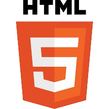

Education
2022 - present, UPN “Veteran” Jawa Timur, pursuing undergraduate degree in computer science.

2019 - 2022, SMA Al Irsyad Surabaya, focusing on science subjects.
2017 - 2019, Pesantren Islam Al Irsyad Tengaran 2 Majalengka
As a dynamic and motivated web programmer, I am driven by a fervent passion for crafting innovative and user-centric web solutions that elevate user experiences and meet diverse needs. With a solid foundation in web programming languages including HTML, CSS, and PHP, I possess the expertise to translate ideas into functional and aesthetically pleasing websites.
My dedication to continuous learning is evident in my commitment to staying abreast of the latest advancements and trends in web development. I thrive on challenges and am constantly seeking opportunities to expand my skill set and explore emerging technologies that enhance the development process and push the boundaries of what is possible on the web.
With a keen eye for detail and a penchant for problem-solving, I approach each project with enthusiasm and a determination to deliver high-quality results. Whether it's optimizing website performance, implementing responsive design principles, or integrating cutting-edge features, I am adept at leveraging my technical prowess to drive the development of dynamic and impactful web applications.
I am now eagerly seeking new opportunities to apply my skills and expertise towards the creation of cutting-edge web solutions that not only meet but exceed the expectations of clients and users alike. With a collaborative mindset and a drive for excellence, I am confident in my ability to contribute positively to any team or project and to play a pivotal role in shaping the future of web development.
2022 - present, UPN “Veteran” Jawa Timur, pursuing undergraduate degree in computer science.
2019 - 2022, SMA Al Irsyad Surabaya, focusing on science subjects.
2017 - 2019, Pesantren Islam Al Irsyad Tengaran 2 Majalengka
Web Development Languages



Programming Languages


Human Languages
English
Bahasa Indonesia
Arabic